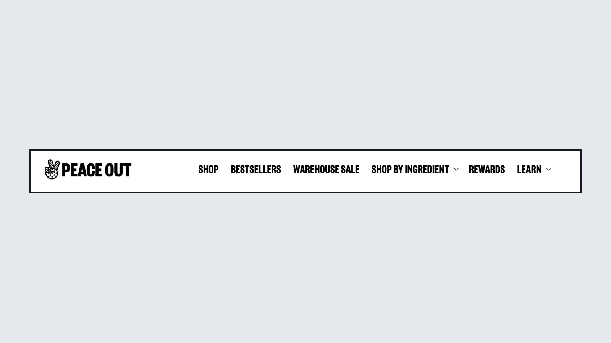
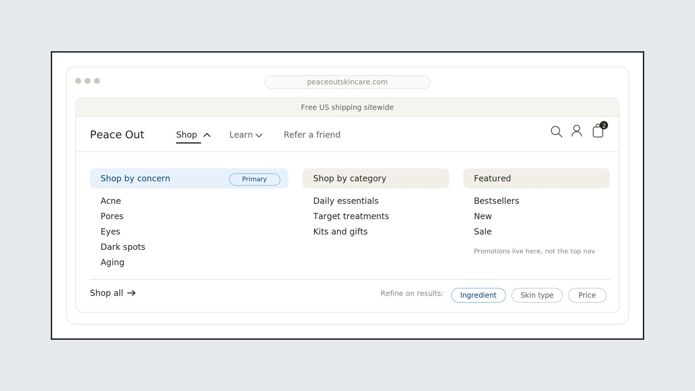
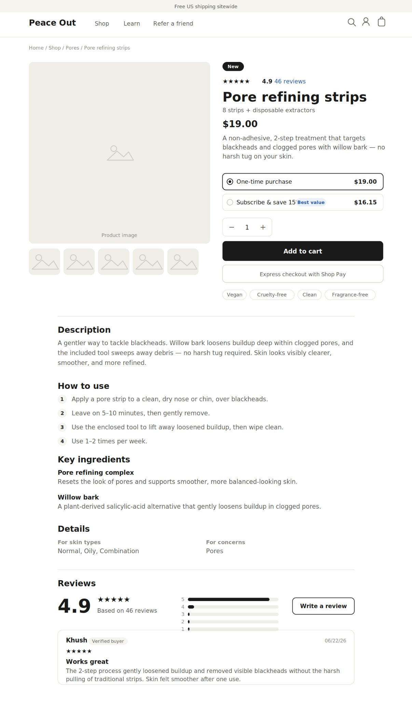

Parallel e-commerce agency, 2026
Two Beauty Brands, Two Different UX Strategies
Same category, same platform, opposite shoppers.
- Role
- Lead product designer
- Clients
- Peace Out Skincare, Winky Lux
- Timeline
- 2026
- Problem
- Two beauty brands on Shopify, each with a site that didn't reflect how its customers actually shop. Same category and platform, but opposite shoppers.
- Outcome
- 34 findings across both sites, each rated by severity and effort, with a prioritized roadmap and redesign direction for each brand.
Context
Both audits came through Parallel's work with beauty brands. Peace Out's customers arrive with a skin problem they want solved. Winky Lux's customers arrive for a mood, a flavor, or a small treat.
Running the two back to back made one thing clear: the same method can, and should, produce opposite recommendations. A good audit starts from how a specific customer shops, not from a generic checklist.
Method
I evaluated each site through four lenses: Nielsen Norman Group's usability heuristics, Baymard Institute's e-commerce research, a task-based walkthrough of the core journey from finding a product to checkout, and WCAG 2.2 AA for accessibility.
Every finding records what's happening, why it matters to the shopper and the business, a recommendation, and evidence. Each is rated by severity and by effort, so the team can sequence the work instead of facing a flat list.
Findings for Peace Out, 9 of them rated major.
Peace Out, July 2026Findings for Winky Lux, from site structure to product pages.
Winky Lux, August 2026Lenses applied to every finding: heuristics, e-commerce research, task walkthrough, accessibility.
Both auditsPeace Out: shoppers arrive with a problem
Peace Out is a direct-to-consumer skincare brand known for acne care. The site had real strengths: high-volume reviews, clinical-study framing, press validation, and concern-based entry points on the homepage. The problems were in structure, hierarchy, and trust.
Three ways to browse one catalog
What I foundThe header browsed by ingredient, the homepage and filters by concern, and the footer by use case. Shoppers had to re-orient at every level, and no single model was reinforced.
What I recommendedCommit to concern as the primary model, since it matches how shoppers describe themselves. Ingredient becomes a filter, promotions move under Shop, and the top navigation shrinks to three items: Shop, Learn, and Refer.
Headings that shout at every level
What I foundOne condensed, all-caps display face stood in for six or seven levels of hierarchy, so weight stopped signaling structure. In one section, an ingredient name was set larger than the header it belonged to.
What I recommendedA three-to-four-level type scale where no child outranks its parent, with sentence case for product names and sub-headers.
Product information trapped in images
What I foundMuch of the product page's gallery was text on images: benefits, ingredients, and how-to steps, often repeating the copy beside them.
What I recommendedMove essential text into live HTML. It's a clutter fix and an accessibility fix at once, since screen readers and search can't read text in images.
Mixed signals at the moment of purchase
What I foundThe banner promised free shipping sitewide while the cart showed a progress bar toward a free-shipping threshold. Review counts for the flagship product differed between pages, and two different products showed the identical count.
What I recommendedReconcile the shipping policy with the interface, and source review counts from one system of record so every surface matches.



Winky Lux: shoppers arrive for a mood
Winky Lux is a color-cosmetics brand that is loud, playful, and built on small, affordable treats, with new flavors and seasonal drops almost every month. The site's problem was a gap: the brand's personality and the way it merchandises showed up at the edges of the site, but not where people actually shop.
Navigation by body part, merchandising by collection
What I foundThe navigation was organized as Lip, Eye, and Face, while the brand sells through collections, flavors, and finishes. A shopper looking for a mood had to already know the product's name. The header and footer also used two different category schemes.
What I recommendedAdd a collections tier alongside categories, with landing pages that carry each collection's story, and align the footer to the same structure.
One product, many tiles
What I foundThe lip page was a flat grid of about 60 tiles, with the same product appearing as a single, a mini, a trio, and a set.
What I recommendedMake the product family the grid unit ("8 flavors, from $18"), move size and pack count onto the product page as variants, and give sets their own surface. That takes the page from about 60 tiles to about 25 real choices without dropping a SKU.
Filters that skip the selling points
What I foundThe only filter was an unlabeled color picker, and it was slow to respond. Finish, flavor, and format, the things that make these products distinct, couldn't be filtered at all.
What I recommendedFacets for finish, flavor or scent, format, collection, and price, with shade names shown in the color filter.
The differentiator was buried
What I foundThe brand's color-changing pH technology, its hardest-to-copy feature, sat in a mid-page banner. The first screen sold one product rather than the brand, which matters for shoppers arriving cold from social media.
What I recommendedBring the brand line into the hero, and show the color change rather than describe it, using before-and-after imagery or short video.
The brand stopped at the edges of the page
What I foundPattern and saturated color appeared in the announcement bar and footer, while the product grid, filters, and buy buttons were neutral black and white.
What I recommendedDecide deliberately where color earns its place, in collection headers, category tiles, empty states, and calls to action, and test brand-colored buttons against black with contrast verified.
What showed up on both sites
Different brands and different shoppers, but the same three failure points appeared on both.
Contradictory structure
On both sites, the header and footer organized the catalog in different ways, so neither model became learnable.
Social proof that looked fabricated
Both sites showed identical review counts on different products. Reviews were a genuine strength for both brands, and a visible data error undercuts exactly that.
Flat hierarchy on the product page
Both product pages made it hard to tell titles, sections, and body text apart, which slows scanning at the moment of decision.
Results and what's next
Both audits were delivered to the brands' teams through Parallel. I'm following up on which recommendations shipped and what changed, and these are the measures I'll report.
Recommendations implemented.
Following upChange in conversion after changes ship.
Following upAccessibility issues resolved.
Following upLooking back
Running two audits back to back taught me that the same heuristics can lead to opposite answers. The method stays fixed, but the recommendation has to come from how that particular customer shops.